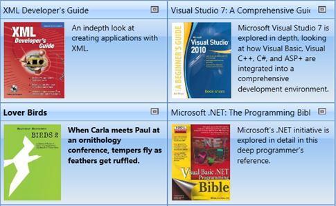
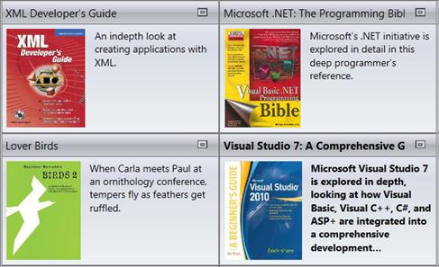
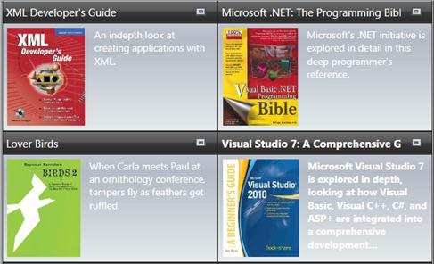
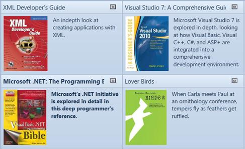
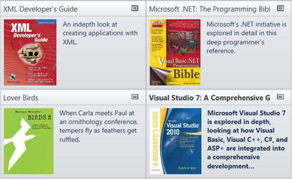
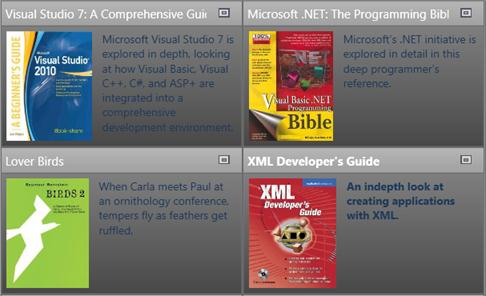
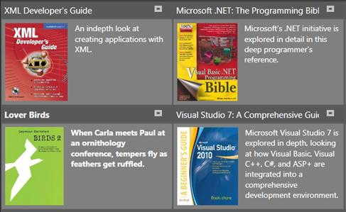
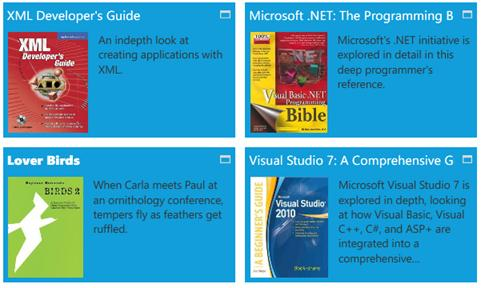
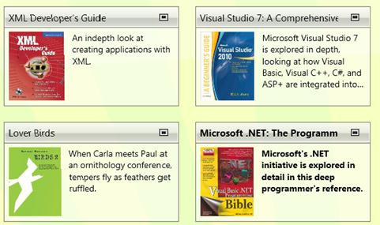

The TileViewControl has the following built-in styles:
1. Office2007Blue
2. Office2007Black
3. Office2007Silver
4. Office2010Blue
5. Office2010Black
6. Office2010Silver
7. Blend
8. Metro
9. Transparent
These styles can be applied to the control using XAML. The following code example illustrates how to apply Office2007Blue style to the TileViewControl.
|
[XAML] <syncfusion:TileViewControl syncfusion:SkinStorage.VisualStyle="Office2010Blue" />
|
These styles can also be applied to the control using C# as follows.
|
[C#] SkinStorage.SetVisualStyle(tileViewInstance, "Office2010Blue");
|
The following illustrations show the TileViewControl that is applied with different built-in styles.

Figure 1084: TileViewControl with Office2007Blue Style

Figure 1085: TileViewControl with Office2007Silver style

Figure 1086: TileViewControl with Office2007Black style

Figure 1087:TileViewControl with Office2010Blue style

Figure 1088:TileViewControl with Office2010Silver style

Figure 1089: TileViewControl with Office2010Black style

Figure 1090: TileViewcontrol with Blend sytle

Figure 1091: TileViewControl with Metro style

Figure 1092: TileViewControl with Transparent style